Coordinate Transformations#
About coordinate transformations#
There are a number of essential coordinate transformations specific to neutron-scattering such as conversion from time-of-flight to \(\lambda\) (wavelength) or \(Q\) (momentum transfer). Such coordinate transformations are also frequently referred to as “unit conversion”, but here we avoid this terminology, to clearly distinguish from conversion of array units using sc.to_unit.
Scipp provides coordinate transformations using sc.transform_coords. Scippneutron defines concrete transformations for time-of-flight neutron scattering, as well as building blocks for customizing transformations. Both are discussed in the following.
Built-in transformations#
Overview of time-of-flight transformations#
For background, we refer to PaN-learning on Introduction to neutron scattering and Basics of neutron scattering. Below we also describe the more direct approach.
We define the beamline geometry as in this image:
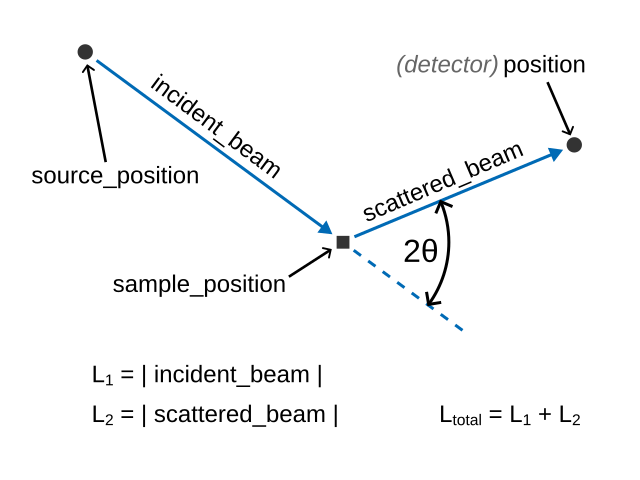
Where the source position defines the point where \(t=0\) (or vice versa). And \(2\theta\) is the scattering angle, as defined in Bragg’s law, not to be confused with \(\theta_{\mathsf{spherical}}\) in sperical coordinates. In many instruments the beam is roughly aligned with the \(z\)-axis, so \(2\theta = \theta_{\mathsf{spherical}}\). The factor of \(2\) is a recurrent source of bugs.
In addition:
\(h\) is the Planck constant, \(m_{\mathsf{n}}\) is the neutron mass.
\(d\) is the interplanar lattice spacing
\(\lambda\) is the de Broglie wavelength
\(\vec{Q}\) (
Q_vecin code) is the momentum transfer and \(Q\) its norm\(E\) is the energy
In the special case of inelastic neutron scattering we have additionally:
\(E_i\) is the known incident energy. This case is called direct inelastic scattering. We define \(t_0 = \sqrt{L_1^2 \cdot m_{\mathsf{n}} / (2 E_i)}\)
\(E_f\) is the known final energy. This case is called indirect inelastic scattering. We define \(t_0 = \sqrt{L_2^2 \cdot m_{\mathsf{n}} / (2 E_f)}\) In this case \(E_f\) is actually determined by analyzer crystals in the secondary flight path. It is assumed that the detector positions are set to the effective (neutronic) rather than physical positions, since the computation of \(L_2\) assumes a straight line connection between sample and detectors.
Conversions between these quantities are given by the following table:
Input coord |
Output coord |
Equation used for coord transformation |
|---|---|---|
|
|
\(d = \frac{\lambda}{2\sin(\theta)} = \frac{h \cdot t}{L_{\mathsf{total}} \cdot m_{\mathsf{n}} \cdot 2 \sin(\theta)}\) |
|
|
\(\lambda = \frac{h \cdot t}{m_{\mathsf{n}} \cdot L_{\mathsf{total}}}\) |
|
|
\(Q = \frac{4 \pi \sin(\theta)}{\lambda}\) |
|
|
\(\lambda = \frac{4 \pi \sin(\theta)}{Q}\) |
|
|
\(\vec{Q} = \vec{k}_i - \vec{k}_f = \frac{2\pi}{\lambda} \left(\hat{e}_i - \hat{e}_f\right)\) |
|
|
\(E = \frac{m_{\mathsf{n}}L^2_{\mathsf{total}}}{2t^2}\) |
|
|
\(E = E_i - \frac{m_{\mathsf{n}}L^2_{\mathsf{2}}}{2\left(t-t_0\right)^{2}}\) |
|
|
\(E = \frac{m_{\mathsf{n}}L^2_{\mathsf{1}}}{2\left(t-t_0\right)^{2}} - E_f\) |
See the reference of scippneutron.conversion for additional conversions and more details.
Transformation graphs#
The above table defines how an output coordinate such as wavelength is computed from inputs such as Ltotal and tof. In practice not all input data directly comes with all the required metadata. For example, instead of Ltotal the metadata may only contain source_position, sample_position, and position. These can then be used to compute derived metadata such as Ltotal. transform_coords can automatically do this by walking a transformation graph.
The transformations typically require two components:
A definition of the beamline geometry which defines, e.g., how scattering angles are to be computed from positions of beamline components such as sample and detector positions.
A definition of the scattering kinematics and dynamics, e.g., how \(\lambda\) or \(Q\) can be computed from time-of-flight for an elastic scattering process.
Pre-defined standard components (transformation graphs and graph building blocks) are available in scippneutron.conversion.graph:
[1]:
import scipp as sc
from scippneutron.conversion import graph
graph.beamline.beamline defines a “simple” (straight) time-of-flight beamline with source-, sample-, and detector positions. Two variants, with and without scattering are provided.
Without scattering, the transformation graph is simple. This intended for use with monitors or imaging beamlines where no scattering from a sample occurs:
[2]:
sc.show_graph(graph.beamline.beamline(scatter=False), simplified=True)
[2]:
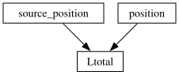
The graph is to be read as follows. Starting with the node for the desired output coordinate, here Ltotal, transform_coords proceeds as follows:
If
Ltotalis found in the metadata, no transformation is performed. ReturnLtotal.If
Ltotalis not found in the metadata,For each input to the node (arrows pointing to the node, here
source_positionandposition) go to 1., i.e., either find the input, or compute it by continuing to walk upwards in the graph.Compute
Ltotalfrom the found or computed inputs and return it.
If the top of the graph is reached without finding all required inputs, the transformation fails. Refer to the scipp documentation on Coordinate Transformations for a more detailed explanation.
A more complex example is conversions.beamline for a scattering process:
[3]:
sc.show_graph(graph.beamline.beamline(scatter=True), simplified=True)
[3]:
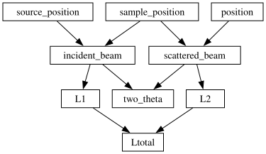
In addition to defining how beamline parameters can be computed, a second building block defines how, e.g., \(\lambda\) or \(Q\) can be computed from an input coordinate. There are four cases:
conversions.kinematicfor straight propagation of neutrons, i.e., without any scattering process. This is intended for use in combination withconversions.beamline(scatter=False).conversions.elasticfor elastic scattering processes.conversions.direct_inelasticfor direct-inelastic scattering processes, i.e., for fixed incident energies.conversions.indirect_inelasticfor direct-inelastic scattering processes, i.e., fixed final energies, typically using analyzer crystals.
The coordinate transformation logic defined by these four cases is as follows:
[4]:
sc.show_graph(graph.tof.kinematic("tof"), simplified=True)
[4]:
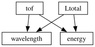
[5]:
sc.show_graph(graph.tof.elastic("tof"), simplified=True)
[5]:
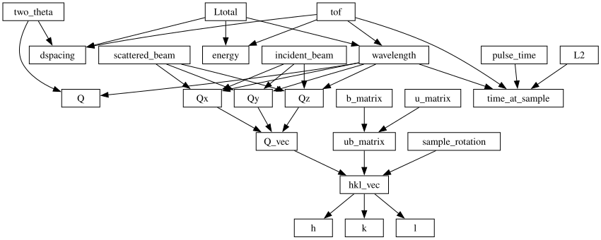
[6]:
sc.show_graph(graph.tof.direct_inelastic("tof"), simplified=True)
[6]:
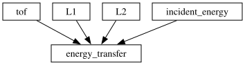
[7]:
sc.show_graph(graph.tof.indirect_inelastic("tof"), simplified=True)
[7]:
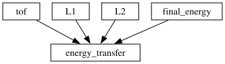
Computing energy transfer for an indirect geometry instrument requires changes to the beamline graph to account for scattering off of the analyzers. This has not yet been implemented in ScippNeutron as the precise input coordinates for relevant instruments are unknown. But an example has been developed for a summer school here.
Performing a coordinate transformation#
The transformation graphs depicted above can now be used to transform time-of-flight data to, e.g., wavelength. We need to combine the two building blocks, the beamline transformation graph and the elastic scattering transformation graph, into a single graph:
[8]:
import scipp as sc
from scippneutron.conversion.graph.beamline import beamline
from scippneutron.conversion.graph.tof import elastic
graph = {**beamline(scatter=True), **elastic("tof")}
sc.show_graph(graph, simplified=True)
[8]:
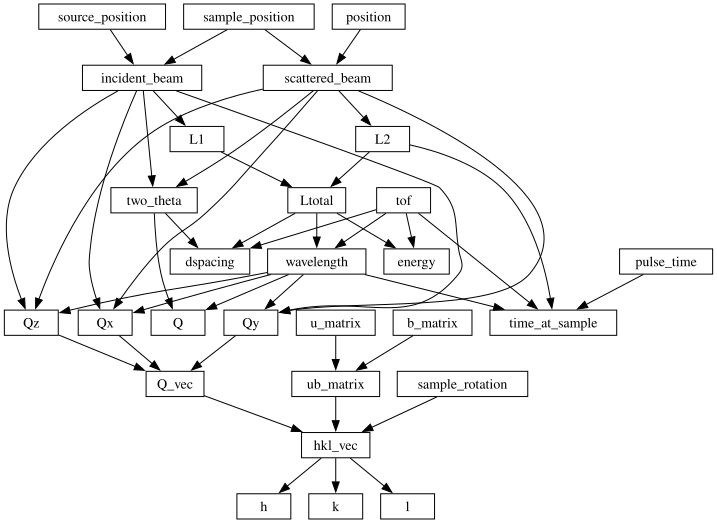
We use the following powder diffraction data to demonstrate the conversion:
[9]:
import scippneutron as scn
da = scn.data.powder_sample()['data']
da
FrameworkManager-[Notice] Welcome to Mantid 6.8.0
FrameworkManager-[Notice] Please cite: http://dx.doi.org/10.1016/j.nima.2014.07.029 and this release: http://dx.doi.org/10.5286/Software/Mantid6.8
CheckMantidVersion-[Notice] A new version of Mantid(6.9.0) is available for download from https://download.mantidproject.org
DownloadInstrument-[Notice] All instrument definitions up to date
Load-[Notice] Load started
Load-[Notice] Load successful, Duration 1.46 seconds
DeleteWorkspace-[Notice] DeleteWorkspace started
DeleteWorkspace-[Notice] DeleteWorkspace successful, Duration 0.00 seconds
[9]:
- spectrum: 24794
- tof: 1
- position(spectrum)vector3m[ 1.17451004 -1.01106149 -2.03796699], [ 1.18147634 -0.95946649 -2.05334117], ..., [1.81428985 0.09565841 3.84338287], [1.81375055 0.1499371 3.84269584]
Values:
array([[ 1.17451004, -1.01106149, -2.03796699], [ 1.18147634, -0.95946649, -2.05334117], [ 1.18844265, -0.90787149, -2.06871534], ..., [ 1.81482915, 0.04137972, 3.8440699 ], [ 1.81428985, 0.09565841, 3.84338287], [ 1.81375055, 0.1499371 , 3.84269584]]) - sample_position()vector3m[0. 0. 0.]
Values:
array([0., 0., 0.]) - source_position()vector3m[ 0. 0. -60.]
Values:
array([ 0., 0., -60.]) - spectrum(spectrum)int321, 2, ..., 24793, 24794
Values:
array([ 1, 2, 3, ..., 24792, 24793, 24794], dtype=int32) - tof(tof [bin-edge])float64µs19.0, 1.669e+04
Values:
array([ 19. , 16694.30078125])
- (spectrum, tof)DataArrayViewbinned data [len=0, len=0, ..., len=0, len=0]
dim='event', content=DataArray( dims=(event: 17926980), data=float32[counts], coords={'tof':float64[µs], 'pulse_time':datetime64[ns]})
The result after applying the coordinate transformation is:
[10]:
da.transform_coords("wavelength", graph=graph)
[10]:
- spectrum: 24794
- wavelength: 1
- L1()float64m60.0
Values:
array(60.) - L2(spectrum)float64m2.560, 2.556, ..., 4.251, 4.252
Values:
array([2.56027902, 2.55590928, 2.55268677, ..., 4.25113991, 4.25116338, 4.25188 ]) - Ltotal(spectrum)float64m62.560, 62.556, ..., 64.251, 64.252
Values:
array([62.56027902, 62.55590928, 62.55268677, ..., 64.25113991, 64.25116338, 64.25188 ]) - incident_beam()vector3m[ 0. 0. 60.]
Values:
array([ 0., 0., 60.]) - position(spectrum)vector3m[ 1.17451004 -1.01106149 -2.03796699], [ 1.18147634 -0.95946649 -2.05334117], ..., [1.81428985 0.09565841 3.84338287], [1.81375055 0.1499371 3.84269584]
Values:
array([[ 1.17451004, -1.01106149, -2.03796699], [ 1.18147634, -0.95946649, -2.05334117], [ 1.18844265, -0.90787149, -2.06871534], ..., [ 1.81482915, 0.04137972, 3.8440699 ], [ 1.81428985, 0.09565841, 3.84338287], [ 1.81375055, 0.1499371 , 3.84269584]]) - sample_position()vector3m[0. 0. 0.]
Values:
array([0., 0., 0.]) - scattered_beam(spectrum)vector3m[ 1.17451004 -1.01106149 -2.03796699], [ 1.18147634 -0.95946649 -2.05334117], ..., [1.81428985 0.09565841 3.84338287], [1.81375055 0.1499371 3.84269584]
Values:
array([[ 1.17451004, -1.01106149, -2.03796699], [ 1.18147634, -0.95946649, -2.05334117], [ 1.18844265, -0.90787149, -2.06871534], ..., [ 1.81482915, 0.04137972, 3.8440699 ], [ 1.81428985, 0.09565841, 3.84338287], [ 1.81375055, 0.1499371 , 3.84269584]]) - source_position()vector3m[ 0. 0. -60.]
Values:
array([ 0., 0., -60.]) - spectrum(spectrum)int321, 2, ..., 24793, 24794
Values:
array([ 1, 2, 3, ..., 24792, 24793, 24794], dtype=int32) - tof(wavelength [bin-edge])float64µs19.0, 1.669e+04
Values:
array([ 19. , 16694.30078125]) - wavelength(spectrum, wavelength [bin-edge])float64Å0.001, 1.056, ..., 0.001, 1.028
Values:
array([[0.00120148, 1.05567339], [0.00120156, 1.05574713], [0.00120162, 1.05580152], ..., [0.00116986, 1.02789183], [0.00116986, 1.02789145], [0.00116984, 1.02787999]])
- (spectrum, wavelength)DataArrayViewbinned data [len=0, len=0, ..., len=0, len=0]
dim='event', content=DataArray( dims=(event: 17926980), data=float32[counts], coords={'tof':float64[µs], 'pulse_time':datetime64[ns], 'wavelength':float64[Å]})
Note how transform_coords automatically handles event data.
Customizing transformations#
Many neutron beamlines are more complex than what is assumed by the simple built-in transformation graphs. The coordinate transformation mechanism is completely generic and is customizable. We provide four examples:
Gravity correction demonstrates how to replace a node in an existing graph. The example takes into account a gravity drop of scattered neutrons when computing \(2\theta\).
Plane wave beam demonstrates how to replace a node in an existing graph. The example computes \(L_{\text{total}}\) not using a straight-line definition (which assumes a point-like source) but instead used the direction of the incident beam. This could be used for imaging beamlines to ensure that all image sensor pixels have identical wavelength coordinates.
Diffraction calibration demonstrates a completely custom transformation without use of pre-defined graphs. The example uses calibration results to compute the interplanar lattice spacing \(d\), instead of computing \(d\) using positions of beamline components.
2-D Rietveld demonstrates how a new node is added to an existing graph. The example computes \(d_{\text{perp}}\) and \(d\) as used in 2-D Rietveld. This also demonstrates how to continue working with data with multiple output coordinates using binning.
Gravity correction#
For techniques such as SANS which are probing low Q regions the basic conversion approach may not be sufficient. A computation of \(2\theta\) may need to take into account gravity since the gravity drop after scattering is not negligible. This can be achieved by replacing the function for computation of two_theta that is defined as part of conversion.graph.beamline.beamline(scatter=True). We define a custom two_theta function:
[11]:
import scipp as sc
from scipp.constants import m_n, h
def two_theta(gravity, wavelength, incident_beam, scattered_beam):
# Arbitrary internal convention: beam=z, gravity=y
g = sc.norm(gravity)
L2 = sc.norm(scattered_beam)
y = sc.dot(scattered_beam, gravity) / g
n = sc.cross(incident_beam, gravity)
n /= sc.norm(n)
x = sc.dot(scattered_beam, n)
wavelength = sc.to_unit(wavelength, "m", copy=False)
drop = g * m_n**2 / (2 * h**2) * wavelength**2 * L2**2
return sc.asin(sc.sqrt(x**2 + (y + drop) ** 2) / L2)
This can be used to setup a modified graph for the coordinate transformation:
[12]:
from scippneutron.conversion import graph
q_with_gravity = {**graph.beamline.beamline(scatter=True), **graph.tof.elastic_Q("tof")}
q_with_gravity["two_theta"] = two_theta
The result is as follows:
[13]:
sc.show_graph(q_with_gravity, simplified=True)
[13]:
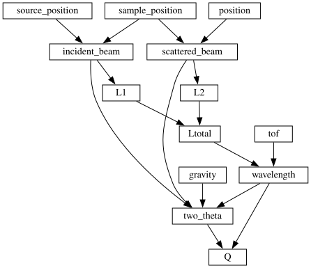
We can use this to convert SANS data to \(Q\). Our custom transformation graph requires a gravity input coordinate, so we define one. In this case (LARMOR beamline) “up” is along the y axis:
[14]:
import scippneutron as scn
from scipp.constants import g
da = scn.data.tutorial_dense_data()['detector']
# Convert to bin centers so we can later bin into Q bins
da.coords["tof"] = 0.5 * (da.coords["tof"]["tof", :-1] + da.coords["tof"]["tof", 1:])
da.coords["gravity"] = sc.vector(value=[0, -1, 0]) * g
da_gravity = da.transform_coords("Q", graph=q_with_gravity)
da_gravity
[14]:
- spectrum: 114688
- Q: 200
- L1()float64m25.3
Values:
array(25.3) - L2(spectrum)float64m4.627, 4.626, ..., 4.688, 4.688
Values:
array([4.62652824, 4.62603552, 4.62554461, ..., 4.68779261, 4.68807737, 4.6883633 ]) - Ltotal(spectrum)float64m29.927, 29.926, ..., 29.988, 29.988
Values:
array([29.92652824, 29.92603552, 29.92554461, ..., 29.98779261, 29.98807737, 29.9883633 ]) - Q(spectrum, Q)float641/Å31.901, 10.774, ..., 0.059, 0.058
Values:
array([[31.90066133, 10.77440241, 6.4818125 , ..., 0.0823525 , 0.08193745, 0.08152656], [31.78561909, 10.73554706, 6.45843737, ..., 0.08205538, 0.08164182, 0.08123241], [31.67056711, 10.69668842, 6.43506025, ..., 0.08175823, 0.08134617, 0.08093824], ..., [22.66447334, 7.65489335, 4.60513569, ..., 0.05852807, 0.05823328, 0.05794145], [22.75731847, 7.68625166, 4.62400065, ..., 0.05876779, 0.0584718 , 0.05817877], [22.85015417, 7.71760678, 4.6428637 , ..., 0.05900748, 0.05871028, 0.05841606]]) - gravity()vector3m/s^2[ 0. -9.80665 0. ]
Values:
array([ 0. , -9.80665, 0. ]) - incident_beam()vector3m[ 0. 0. 25.3]
Values:
array([ 0. , 0. , 25.3]) - position(spectrum)vector3m[ 0.778 0.13046651 29.85877813], [ 0.77506458 0.13046651 29.85877813], ..., [-5.69651663e-01 -2.28657089e-02 2.99532831e+01], [-5.72000000e-01 -2.28657089e-02 2.99532831e+01]
Values:
array([[ 7.78000000e-01, 1.30466508e-01, 2.98587781e+01], [ 7.75064579e-01, 1.30466508e-01, 2.98587781e+01], [ 7.72129159e-01, 1.30466508e-01, 2.98587781e+01], ..., [-5.67303327e-01, -2.28657089e-02, 2.99532831e+01], [-5.69651663e-01, -2.28657089e-02, 2.99532831e+01], [-5.72000000e-01, -2.28657089e-02, 2.99532831e+01]]) - sample_position()vector3m[ 0. 0. 25.3]
Values:
array([ 0. , 0. , 25.3]) - scattered_beam(spectrum)vector3m[0.778 0.13046651 4.55877813], [0.77506458 0.13046651 4.55877813], ..., [-0.56965166 -0.02286571 4.6532831 ], [-0.572 -0.02286571 4.6532831 ]
Values:
array([[ 0.778 , 0.13046651, 4.55877813], [ 0.77506458, 0.13046651, 4.55877813], [ 0.77212916, 0.13046651, 4.55877813], ..., [-0.56730333, -0.02286571, 4.6532831 ], [-0.56965166, -0.02286571, 4.6532831 ], [-0.572 , -0.02286571, 4.6532831 ]]) - source_position()vector3m[0. 0. 0.]
Values:
array([0., 0., 0.]) - spectrum(spectrum)int32𝟙11, 12, ..., 114697, 114698
Values:
array([ 11, 12, 13, ..., 114696, 114697, 114698], dtype=int32) - tof(Q)float64µs254.988, 754.963, ..., 9.925e+04, 9.975e+04
Values:
array([ 254.9875, 754.9625, 1254.9375, 1754.9125, 2254.8875, 2754.8625, 3254.8375, 3754.8125, 4254.7875, 4754.7625, 5254.7375, 5754.7125, 6254.6875, 6754.6625, 7254.6375, 7754.6125, 8254.5875, 8754.5625, 9254.5375, 9754.5125, 10254.4875, 10754.4625, 11254.4375, 11754.4125, 12254.3875, 12754.3625, 13254.3375, 13754.3125, 14254.2875, 14754.2625, 15254.2375, 15754.2125, 16254.1875, 16754.1625, 17254.1375, 17754.1125, 18254.0875, 18754.0625, 19254.0375, 19754.0125, 20253.9875, 20753.9625, 21253.9375, 21753.9125, 22253.8875, 22753.8625, 23253.8375, 23753.8125, 24253.7875, 24753.7625, 25253.7375, 25753.7125, 26253.6875, 26753.6625, 27253.6375, 27753.6125, 28253.5875, 28753.5625, 29253.5375, 29753.5125, 30253.4875, 30753.4625, 31253.4375, 31753.4125, 32253.3875, 32753.3625, 33253.3375, 33753.3125, 34253.2875, 34753.2625, 35253.2375, 35753.2125, 36253.1875, 36753.1625, 37253.1375, 37753.1125, 38253.0875, 38753.0625, 39253.0375, 39753.0125, 40252.9875, 40752.9625, 41252.9375, 41752.9125, 42252.8875, 42752.8625, 43252.8375, 43752.8125, 44252.7875, 44752.7625, 45252.7375, 45752.7125, 46252.6875, 46752.6625, 47252.6375, 47752.6125, 48252.5875, 48752.5625, 49252.5375, 49752.5125, 50252.4875, 50752.4625, 51252.4375, 51752.4125, 52252.3875, 52752.3625, 53252.3375, 53752.3125, 54252.2875, 54752.2625, 55252.2375, 55752.2125, 56252.1875, 56752.1625, 57252.1375, 57752.1125, 58252.0875, 58752.0625, 59252.0375, 59752.0125, 60251.9875, 60751.9625, 61251.9375, 61751.9125, 62251.8875, 62751.8625, 63251.8375, 63751.8125, 64251.7875, 64751.7625, 65251.7375, 65751.7125, 66251.6875, 66751.6625, 67251.6375, 67751.6125, 68251.5875, 68751.5625, 69251.5375, 69751.5125, 70251.4875, 70751.4625, 71251.4375, 71751.4125, 72251.3875, 72751.3625, 73251.3375, 73751.3125, 74251.2875, 74751.2625, 75251.2375, 75751.2125, 76251.1875, 76751.1625, 77251.1375, 77751.1125, 78251.0875, 78751.0625, 79251.0375, 79751.0125, 80250.9875, 80750.9625, 81250.9375, 81750.9125, 82250.8875, 82750.8625, 83250.8375, 83750.8125, 84250.7875, 84750.7625, 85250.7375, 85750.7125, 86250.6875, 86750.6625, 87250.6375, 87750.6125, 88250.5875, 88750.5625, 89250.5375, 89750.5125, 90250.4875, 90750.4625, 91250.4375, 91750.4125, 92250.3875, 92750.3625, 93250.3375, 93750.3125, 94250.2875, 94750.2625, 95250.2375, 95750.2125, 96250.1875, 96750.1625, 97250.1375, 97750.1125, 98250.0875, 98750.0625, 99250.0375, 99750.0125]) - two_theta(spectrum, Q)float64rad0.171, 0.171, ..., 0.122, 0.122
Values:
array([[0.17134593, 0.17134593, 0.17134592, ..., 0.17130465, 0.17130423, 0.17130381], [0.17072932, 0.17072932, 0.17072932, ..., 0.1706879 , 0.17068748, 0.17068706], [0.17011265, 0.17011264, 0.17011264, ..., 0.17007107, 0.17007065, 0.17007023], ..., [0.12141349, 0.12141349, 0.1214135 , ..., 0.12142386, 0.12142397, 0.12142408], [0.12191032, 0.12191032, 0.12191032, ..., 0.12192065, 0.12192076, 0.12192087], [0.12240709, 0.12240709, 0.12240709, ..., 0.12241738, 0.12241749, 0.12241759]]) - wavelength(spectrum, Q)float64Å0.034, 0.100, ..., 13.093, 13.159
Values:
array([[ 0.03370719, 0.09979966, 0.16589213, ..., 13.05392336, 13.12001582, 13.18610829], [ 0.03370775, 0.0998013 , 0.16589486, ..., 13.05413828, 13.12023184, 13.18632539], [ 0.0337083 , 0.09980294, 0.16589758, ..., 13.05435243, 13.12044707, 13.18654171], ..., [ 0.03363833, 0.09959577, 0.16555321, ..., 13.02725449, 13.09321193, 13.15916938], [ 0.03363801, 0.09959483, 0.16555164, ..., 13.02713078, 13.0930876 , 13.15904442], [ 0.03363769, 0.09959388, 0.16555006, ..., 13.02700658, 13.09296276, 13.15891895]])
- (spectrum, Q)float64counts0.0, 0.0, ..., 0.0, 0.0σ = 0.0, 0.0, ..., 0.0, 0.0
Values:
array([[0., 0., 0., ..., 0., 0., 0.], [0., 0., 0., ..., 0., 0., 0.], [0., 0., 0., ..., 0., 0., 0.], ..., [0., 0., 0., ..., 0., 0., 0.], [0., 0., 0., ..., 0., 0., 0.], [0., 0., 0., ..., 0., 0., 0.]])
Variances (σ²):
array([[0., 0., 0., ..., 0., 0., 0.], [0., 0., 0., ..., 0., 0., 0.], [0., 0., 0., ..., 0., 0., 0.], ..., [0., 0., 0., ..., 0., 0., 0.], [0., 0., 0., ..., 0., 0., 0.], [0., 0., 0., ..., 0., 0., 0.]])
As a final step we may then bin our data into \(Q\) bins:
[15]:
q_bins = sc.linspace(dim="Q", unit="1/angstrom", start=0.0, stop=15.0, num=100)
da_gravity = da_gravity.flatten(to="Q").hist(Q=q_bins)
da_gravity.plot(norm="log")
[15]:
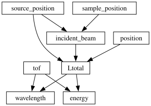
Plane wave beam#
The built-in conversion.graph.beamline.beamline(scatter=False) assumes a straight line from source to detector, i.e., treats the source as a point. If we use this to compute wavelength for an imaging beamline this will result in different wavelengths for each image sensor pixel, which may be undesirable. We can define a custom Ltotal function to compute the average distance along the beam:
[16]:
import scipp as sc
from scippneutron.conversion import graph
def Ltotal(incident_beam, source_position, position):
n = incident_beam / sc.norm(incident_beam)
projected = sc.dot(position, n) * n
return sc.norm(sc.mean(projected) - source_position)
plane_graph = {**graph.beamline.incident_beam(), **graph.tof.kinematic("tof")}
plane_graph["Ltotal"] = Ltotal
sc.show_graph(plane_graph, simplified=True)
[16]:
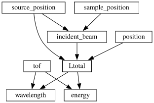
Note how Ltotal uses the mean of the projected position to ensure that the coordinate transformation will produce a wavelength coordinate that does not depend on the pixel:
[17]:
import scippneutron as scn
da = (
scn.data.tutorial_dense_data()['detector']
) # Note that this is actually a SANS beamline, not an imaging beamline
da_plane = da.transform_coords("wavelength", graph=plane_graph)
da_plane
[17]:
- spectrum: 114688
- wavelength: 200
- Ltotal()float64m29.906030613062498
Values:
array(29.90603061) - incident_beam()vector3m[ 0. 0. 25.3]
Values:
array([ 0. , 0. , 25.3]) - position(spectrum)vector3m[ 0.778 0.13046651 29.85877813], [ 0.77506458 0.13046651 29.85877813], ..., [-5.69651663e-01 -2.28657089e-02 2.99532831e+01], [-5.72000000e-01 -2.28657089e-02 2.99532831e+01]
Values:
array([[ 7.78000000e-01, 1.30466508e-01, 2.98587781e+01], [ 7.75064579e-01, 1.30466508e-01, 2.98587781e+01], [ 7.72129159e-01, 1.30466508e-01, 2.98587781e+01], ..., [-5.67303327e-01, -2.28657089e-02, 2.99532831e+01], [-5.69651663e-01, -2.28657089e-02, 2.99532831e+01], [-5.72000000e-01, -2.28657089e-02, 2.99532831e+01]]) - sample_position()vector3m[ 0. 0. 25.3]
Values:
array([ 0. , 0. , 25.3]) - source_position()vector3m[0. 0. 0.]
Values:
array([0., 0., 0.]) - spectrum(spectrum)int32𝟙11, 12, ..., 114697, 114698
Values:
array([ 11, 12, 13, ..., 114696, 114697, 114698], dtype=int32) - tof(wavelength [bin-edge])float64µs5.0, 504.975, ..., 9.950e+04, 1.000e+05
Values:
array([5.0000000e+00, 5.0497500e+02, 1.0049500e+03, 1.5049250e+03, 2.0049000e+03, 2.5048750e+03, 3.0048500e+03, 3.5048250e+03, 4.0048000e+03, 4.5047750e+03, 5.0047500e+03, 5.5047250e+03, 6.0047000e+03, 6.5046750e+03, 7.0046500e+03, 7.5046250e+03, 8.0046000e+03, 8.5045750e+03, 9.0045500e+03, 9.5045250e+03, 1.0004500e+04, 1.0504475e+04, 1.1004450e+04, 1.1504425e+04, 1.2004400e+04, 1.2504375e+04, 1.3004350e+04, 1.3504325e+04, 1.4004300e+04, 1.4504275e+04, 1.5004250e+04, 1.5504225e+04, 1.6004200e+04, 1.6504175e+04, 1.7004150e+04, 1.7504125e+04, 1.8004100e+04, 1.8504075e+04, 1.9004050e+04, 1.9504025e+04, 2.0004000e+04, 2.0503975e+04, 2.1003950e+04, 2.1503925e+04, 2.2003900e+04, 2.2503875e+04, 2.3003850e+04, 2.3503825e+04, 2.4003800e+04, 2.4503775e+04, 2.5003750e+04, 2.5503725e+04, 2.6003700e+04, 2.6503675e+04, 2.7003650e+04, 2.7503625e+04, 2.8003600e+04, 2.8503575e+04, 2.9003550e+04, 2.9503525e+04, 3.0003500e+04, 3.0503475e+04, 3.1003450e+04, 3.1503425e+04, 3.2003400e+04, 3.2503375e+04, 3.3003350e+04, 3.3503325e+04, 3.4003300e+04, 3.4503275e+04, 3.5003250e+04, 3.5503225e+04, 3.6003200e+04, 3.6503175e+04, 3.7003150e+04, 3.7503125e+04, 3.8003100e+04, 3.8503075e+04, 3.9003050e+04, 3.9503025e+04, 4.0003000e+04, 4.0502975e+04, 4.1002950e+04, 4.1502925e+04, 4.2002900e+04, 4.2502875e+04, 4.3002850e+04, 4.3502825e+04, 4.4002800e+04, 4.4502775e+04, 4.5002750e+04, 4.5502725e+04, 4.6002700e+04, 4.6502675e+04, 4.7002650e+04, 4.7502625e+04, 4.8002600e+04, 4.8502575e+04, 4.9002550e+04, 4.9502525e+04, 5.0002500e+04, 5.0502475e+04, 5.1002450e+04, 5.1502425e+04, 5.2002400e+04, 5.2502375e+04, 5.3002350e+04, 5.3502325e+04, 5.4002300e+04, 5.4502275e+04, 5.5002250e+04, 5.5502225e+04, 5.6002200e+04, 5.6502175e+04, 5.7002150e+04, 5.7502125e+04, 5.8002100e+04, 5.8502075e+04, 5.9002050e+04, 5.9502025e+04, 6.0002000e+04, 6.0501975e+04, 6.1001950e+04, 6.1501925e+04, 6.2001900e+04, 6.2501875e+04, 6.3001850e+04, 6.3501825e+04, 6.4001800e+04, 6.4501775e+04, 6.5001750e+04, 6.5501725e+04, 6.6001700e+04, 6.6501675e+04, 6.7001650e+04, 6.7501625e+04, 6.8001600e+04, 6.8501575e+04, 6.9001550e+04, 6.9501525e+04, 7.0001500e+04, 7.0501475e+04, 7.1001450e+04, 7.1501425e+04, 7.2001400e+04, 7.2501375e+04, 7.3001350e+04, 7.3501325e+04, 7.4001300e+04, 7.4501275e+04, 7.5001250e+04, 7.5501225e+04, 7.6001200e+04, 7.6501175e+04, 7.7001150e+04, 7.7501125e+04, 7.8001100e+04, 7.8501075e+04, 7.9001050e+04, 7.9501025e+04, 8.0001000e+04, 8.0500975e+04, 8.1000950e+04, 8.1500925e+04, 8.2000900e+04, 8.2500875e+04, 8.3000850e+04, 8.3500825e+04, 8.4000800e+04, 8.4500775e+04, 8.5000750e+04, 8.5500725e+04, 8.6000700e+04, 8.6500675e+04, 8.7000650e+04, 8.7500625e+04, 8.8000600e+04, 8.8500575e+04, 8.9000550e+04, 8.9500525e+04, 9.0000500e+04, 9.0500475e+04, 9.1000450e+04, 9.1500425e+04, 9.2000400e+04, 9.2500375e+04, 9.3000350e+04, 9.3500325e+04, 9.4000300e+04, 9.4500275e+04, 9.5000250e+04, 9.5500225e+04, 9.6000200e+04, 9.6500175e+04, 9.7000150e+04, 9.7500125e+04, 9.8000100e+04, 9.8500075e+04, 9.9000050e+04, 9.9500025e+04, 1.0000000e+05]) - wavelength(wavelength [bin-edge])float64Å0.001, 0.067, ..., 13.162, 13.228
Values:
array([6.61410747e-04, 6.67991784e-02, 1.32936946e-01, 1.99074714e-01, 2.65212482e-01, 3.31350249e-01, 3.97488017e-01, 4.63625785e-01, 5.29763552e-01, 5.95901320e-01, 6.62039088e-01, 7.28176855e-01, 7.94314623e-01, 8.60452391e-01, 9.26590158e-01, 9.92727926e-01, 1.05886569e+00, 1.12500346e+00, 1.19114123e+00, 1.25727900e+00, 1.32341676e+00, 1.38955453e+00, 1.45569230e+00, 1.52183007e+00, 1.58796784e+00, 1.65410560e+00, 1.72024337e+00, 1.78638114e+00, 1.85251891e+00, 1.91865667e+00, 1.98479444e+00, 2.05093221e+00, 2.11706998e+00, 2.18320774e+00, 2.24934551e+00, 2.31548328e+00, 2.38162105e+00, 2.44775882e+00, 2.51389658e+00, 2.58003435e+00, 2.64617212e+00, 2.71230989e+00, 2.77844765e+00, 2.84458542e+00, 2.91072319e+00, 2.97686096e+00, 3.04299872e+00, 3.10913649e+00, 3.17527426e+00, 3.24141203e+00, 3.30754980e+00, 3.37368756e+00, 3.43982533e+00, 3.50596310e+00, 3.57210087e+00, 3.63823863e+00, 3.70437640e+00, 3.77051417e+00, 3.83665194e+00, 3.90278970e+00, 3.96892747e+00, 4.03506524e+00, 4.10120301e+00, 4.16734078e+00, 4.23347854e+00, 4.29961631e+00, 4.36575408e+00, 4.43189185e+00, 4.49802961e+00, 4.56416738e+00, 4.63030515e+00, 4.69644292e+00, 4.76258068e+00, 4.82871845e+00, 4.89485622e+00, 4.96099399e+00, 5.02713176e+00, 5.09326952e+00, 5.15940729e+00, 5.22554506e+00, 5.29168283e+00, 5.35782059e+00, 5.42395836e+00, 5.49009613e+00, 5.55623390e+00, 5.62237166e+00, 5.68850943e+00, 5.75464720e+00, 5.82078497e+00, 5.88692274e+00, 5.95306050e+00, 6.01919827e+00, 6.08533604e+00, 6.15147381e+00, 6.21761157e+00, 6.28374934e+00, 6.34988711e+00, 6.41602488e+00, 6.48216264e+00, 6.54830041e+00, 6.61443818e+00, 6.68057595e+00, 6.74671372e+00, 6.81285148e+00, 6.87898925e+00, 6.94512702e+00, 7.01126479e+00, 7.07740255e+00, 7.14354032e+00, 7.20967809e+00, 7.27581586e+00, 7.34195362e+00, 7.40809139e+00, 7.47422916e+00, 7.54036693e+00, 7.60650469e+00, 7.67264246e+00, 7.73878023e+00, 7.80491800e+00, 7.87105577e+00, 7.93719353e+00, 8.00333130e+00, 8.06946907e+00, 8.13560684e+00, 8.20174460e+00, 8.26788237e+00, 8.33402014e+00, 8.40015791e+00, 8.46629567e+00, 8.53243344e+00, 8.59857121e+00, 8.66470898e+00, 8.73084675e+00, 8.79698451e+00, 8.86312228e+00, 8.92926005e+00, 8.99539782e+00, 9.06153558e+00, 9.12767335e+00, 9.19381112e+00, 9.25994889e+00, 9.32608665e+00, 9.39222442e+00, 9.45836219e+00, 9.52449996e+00, 9.59063773e+00, 9.65677549e+00, 9.72291326e+00, 9.78905103e+00, 9.85518880e+00, 9.92132656e+00, 9.98746433e+00, 1.00536021e+01, 1.01197399e+01, 1.01858776e+01, 1.02520154e+01, 1.03181532e+01, 1.03842909e+01, 1.04504287e+01, 1.05165665e+01, 1.05827042e+01, 1.06488420e+01, 1.07149798e+01, 1.07811175e+01, 1.08472553e+01, 1.09133931e+01, 1.09795308e+01, 1.10456686e+01, 1.11118064e+01, 1.11779442e+01, 1.12440819e+01, 1.13102197e+01, 1.13763575e+01, 1.14424952e+01, 1.15086330e+01, 1.15747708e+01, 1.16409085e+01, 1.17070463e+01, 1.17731841e+01, 1.18393218e+01, 1.19054596e+01, 1.19715974e+01, 1.20377351e+01, 1.21038729e+01, 1.21700107e+01, 1.22361484e+01, 1.23022862e+01, 1.23684240e+01, 1.24345617e+01, 1.25006995e+01, 1.25668373e+01, 1.26329750e+01, 1.26991128e+01, 1.27652506e+01, 1.28313883e+01, 1.28975261e+01, 1.29636639e+01, 1.30298016e+01, 1.30959394e+01, 1.31620772e+01, 1.32282149e+01])
- (spectrum, wavelength)float64counts0.0, 0.0, ..., 0.0, 0.0σ = 0.0, 0.0, ..., 0.0, 0.0
Values:
array([[0., 0., 0., ..., 0., 0., 0.], [0., 0., 0., ..., 0., 0., 0.], [0., 0., 0., ..., 0., 0., 0.], ..., [0., 0., 0., ..., 0., 0., 0.], [0., 0., 0., ..., 0., 0., 0.], [0., 0., 0., ..., 0., 0., 0.]])
Variances (σ²):
array([[0., 0., 0., ..., 0., 0., 0.], [0., 0., 0., ..., 0., 0., 0.], [0., 0., 0., ..., 0., 0., 0.], ..., [0., 0., 0., ..., 0., 0., 0.], [0., 0., 0., ..., 0., 0., 0.], [0., 0., 0., ..., 0., 0., 0.]])
Diffraction calibration#
While the built-in conversion graphs support computation of \(d\)-spacing based on beamline component positions and time-of-flight, in practice it frequently is computed based parameters from a calibration file. We define a function dspacing to compute this:
[18]:
import scipp as sc
def dspacing(tof, tzero, difc):
difc = sc.reciprocal(difc)
return difc * (tof - tzero)
calibration_graph = {"dspacing": dspacing}
sc.show_graph(calibration_graph)
[18]:
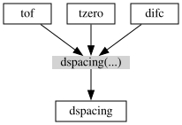
We can then load powder data and set the required input coordinates from a corresponding calibration file:
[19]:
import scippneutron as scn
da = scn.data.powder_sample()['data']
calibration = scn.data.powder_calibration()
da.coords["tzero"] = calibration["tzero"].data
da.coords["difc"] = calibration["difc"].data
Load-[Notice] Load started
Load-[Notice] Load successful, Duration 1.37 seconds
Downloading file 'PG3_4844_calibration.h5' from 'https://public.esss.dk/groups/scipp/scippneutron/5/PG3_4844_calibration.h5' to '/home/runner/.cache/scippneutron/5'.
DeleteWorkspace-[Notice] DeleteWorkspace started
DeleteWorkspace-[Notice] DeleteWorkspace successful, Duration 0.00 seconds
The coordinate transformation then yields:
[20]:
da.transform_coords("dspacing", graph=calibration_graph)
[20]:
- spectrum: 24794
- dspacing: 1
- difc(spectrum)float6410N/mW2.997e+04, 3.003e+04, ..., 7113.696, 7125.408
Values:
array([29971.33683513, 30030.72117038, 30087.70542759, ..., 7107.51320735, 7113.6962062 , 7125.40789494]) - dspacing(dspacing [bin-edge], spectrum)float64Å0.001, 0.001, ..., 2.347, 2.343
Values:
array([[6.33939023e-04, 6.32685439e-04, 6.31487172e-04, ..., 2.67322753e-03, 2.67090405e-03, 2.66651401e-03], [5.57008881e-01, 5.55907422e-01, 5.54854567e-01, ..., 2.34882445e+00, 2.34678292e+00, 2.34292563e+00]]) - position(spectrum)vector3m[ 1.17451004 -1.01106149 -2.03796699], [ 1.18147634 -0.95946649 -2.05334117], ..., [1.81428985 0.09565841 3.84338287], [1.81375055 0.1499371 3.84269584]
Values:
array([[ 1.17451004, -1.01106149, -2.03796699], [ 1.18147634, -0.95946649, -2.05334117], [ 1.18844265, -0.90787149, -2.06871534], ..., [ 1.81482915, 0.04137972, 3.8440699 ], [ 1.81428985, 0.09565841, 3.84338287], [ 1.81375055, 0.1499371 , 3.84269584]]) - sample_position()vector3m[0. 0. 0.]
Values:
array([0., 0., 0.]) - source_position()vector3m[ 0. 0. -60.]
Values:
array([ 0., 0., -60.]) - spectrum(spectrum)int321, 2, ..., 24793, 24794
Values:
array([ 1, 2, 3, ..., 24792, 24793, 24794], dtype=int32) - tof(dspacing [bin-edge])float64µs19.0, 1.669e+04
Values:
array([ 19. , 16694.30078125]) - tzero(spectrum)float64µs0.0, 0.0, ..., 0.0, 0.0
Values:
array([0., 0., 0., ..., 0., 0., 0.])
- (spectrum, dspacing)DataArrayViewbinned data [len=0, len=0, ..., len=0, len=0]
dim='event', content=DataArray( dims=(event: 17926980), data=float32[counts], coords={'tof':float64[µs], 'pulse_time':datetime64[ns], 'dspacing':float64[Å]})
2-D Rietveld#
Powder diffraction data is typically converted to \(d\)-spacing for Rietveld refinement. A more advanced approach additionally requires data depending on \(d_{\perp}\) for a 2-D Rietveld refinement process. We define
[21]:
def dspacing_perpendicular(wavelength, two_theta):
lambda_K = sc.scalar(1.0, unit="angstrom")
return sc.sqrt(
wavelength**2 - 2 * (lambda_K**2) * sc.log(sc.cos(0.5 * two_theta))
)
We then add this as a new node (new dict item) to a graph consisting of built-ins:
[22]:
from scippneutron.conversion import graph
graph = {**graph.beamline.beamline(scatter=True), **graph.tof.elastic("tof")}
graph["d"] = "dspacing" # rename to brief name
graph["d_perp"] = dspacing_perpendicular
The result is:
[23]:
import scipp as sc
del graph["energy"] # not necessary, clarifies conversion graph
del graph["Q"] # not necessary, clarifies conversion graph
sc.show_graph(graph, simplified=True)
[23]:
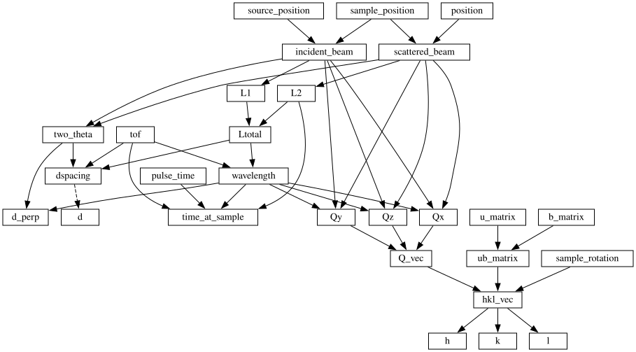
We can then apply the transformation:
[24]:
import scippneutron as scn
da = scn.data.powder_sample()['data']
da_d_d_perp = da.transform_coords(["d", "d_perp"], graph=graph)
da_d_d_perp
Load-[Notice] Load started
Load-[Notice] Load successful, Duration 1.31 seconds
DeleteWorkspace-[Notice] DeleteWorkspace started
DeleteWorkspace-[Notice] DeleteWorkspace successful, Duration 0.00 seconds
[24]:
- spectrum: 24794
- tof: 1
- L1()float64m60.0
Values:
array(60.) - L2(spectrum)float64m2.560, 2.556, ..., 4.251, 4.252
Values:
array([2.56027902, 2.55590928, 2.55268677, ..., 4.25113991, 4.25116338, 4.25188 ]) - Ltotal(spectrum)float64m62.560, 62.556, ..., 64.251, 64.252
Values:
array([62.56027902, 62.55590928, 62.55268677, ..., 64.25113991, 64.25116338, 64.25188 ]) - d(spectrum, tof [bin-edge])float64Å0.001, 0.557, ..., 0.003, 2.343
Values:
array([[6.33939029e-04, 5.57008885e-01], [6.32685444e-04, 5.55907426e-01], [6.31487177e-04, 5.54854572e-01], ..., [2.67322756e-03, 2.34882447e+00], [2.67090407e-03, 2.34678294e+00], [2.66651403e-03, 2.34292565e+00]]) - d_perp(spectrum, tof [bin-edge])float64Å1.511, 1.843, ..., 0.222, 1.052
Values:
array([[1.51087888, 1.84314944], [1.523017 , 1.85315443], [1.53493468, 1.86299218], ..., [0.22150216, 1.0514863 ], [0.22169957, 1.05152754], [0.22207116, 1.05159474]]) - dspacing(spectrum, tof [bin-edge])float64Å0.001, 0.557, ..., 0.003, 2.343
Values:
array([[6.33939029e-04, 5.57008885e-01], [6.32685444e-04, 5.55907426e-01], [6.31487177e-04, 5.54854572e-01], ..., [2.67322756e-03, 2.34882447e+00], [2.67090407e-03, 2.34678294e+00], [2.66651403e-03, 2.34292565e+00]]) - incident_beam()vector3m[ 0. 0. 60.]
Values:
array([ 0., 0., 60.]) - position(spectrum)vector3m[ 1.17451004 -1.01106149 -2.03796699], [ 1.18147634 -0.95946649 -2.05334117], ..., [1.81428985 0.09565841 3.84338287], [1.81375055 0.1499371 3.84269584]
Values:
array([[ 1.17451004, -1.01106149, -2.03796699], [ 1.18147634, -0.95946649, -2.05334117], [ 1.18844265, -0.90787149, -2.06871534], ..., [ 1.81482915, 0.04137972, 3.8440699 ], [ 1.81428985, 0.09565841, 3.84338287], [ 1.81375055, 0.1499371 , 3.84269584]]) - sample_position()vector3m[0. 0. 0.]
Values:
array([0., 0., 0.]) - scattered_beam(spectrum)vector3m[ 1.17451004 -1.01106149 -2.03796699], [ 1.18147634 -0.95946649 -2.05334117], ..., [1.81428985 0.09565841 3.84338287], [1.81375055 0.1499371 3.84269584]
Values:
array([[ 1.17451004, -1.01106149, -2.03796699], [ 1.18147634, -0.95946649, -2.05334117], [ 1.18844265, -0.90787149, -2.06871534], ..., [ 1.81482915, 0.04137972, 3.8440699 ], [ 1.81428985, 0.09565841, 3.84338287], [ 1.81375055, 0.1499371 , 3.84269584]]) - source_position()vector3m[ 0. 0. -60.]
Values:
array([ 0., 0., -60.]) - spectrum(spectrum)int321, 2, ..., 24793, 24794
Values:
array([ 1, 2, 3, ..., 24792, 24793, 24794], dtype=int32) - tof(tof [bin-edge])float64µs19.0, 1.669e+04
Values:
array([ 19. , 16694.30078125]) - two_theta(spectrum)float64rad2.491, 2.504, ..., 0.442, 0.442
Values:
array([2.49144445, 2.50372965, 2.51564288, ..., 0.44118918, 0.44157918, 0.44231324]) - wavelength(spectrum, tof [bin-edge])float64Å0.001, 1.056, ..., 0.001, 1.028
Values:
array([[0.00120148, 1.05567339], [0.00120156, 1.05574713], [0.00120162, 1.05580152], ..., [0.00116986, 1.02789183], [0.00116986, 1.02789145], [0.00116984, 1.02787999]])
- (spectrum, tof)DataArrayViewbinned data [len=0, len=0, ..., len=0, len=0]
dim='event', content=DataArray( dims=(event: 17926980), data=float32[counts], coords={'tof':float64[µs], 'pulse_time':datetime64[ns], 'wavelength':float64[Å], 'dspacing':float64[Å], 'd_perp':float64[Å], 'd':float64[Å]})
In this case the tof dimension has not been renamed/replaced, since there are two output coordinates that depend on it. We can bin this result into 2-D \(d\) and \(d_{\perp}\) bins and remove the spectrum and tof dimensions:
[25]:
da_d_d_perp.hist(d_perp=100, d=100).plot(norm="log")
[25]:
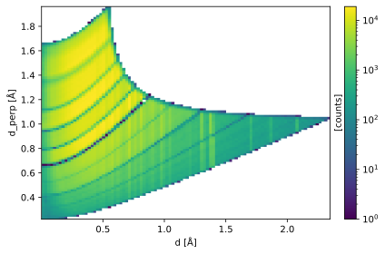